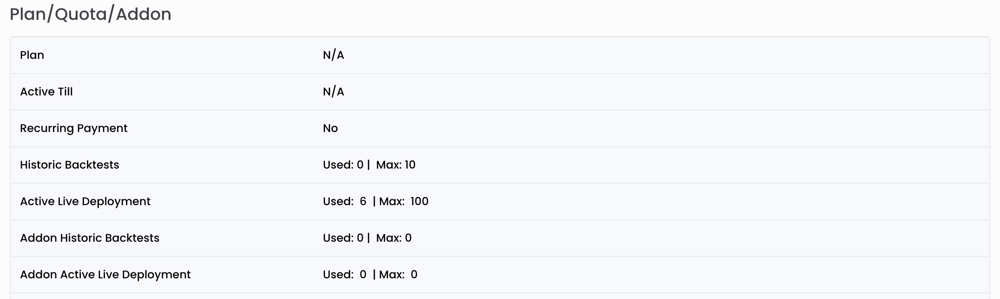

Plans / Addons / Quota
Your current backtest/live quota availability and addon availability can tracked from the profile page.

Plans
You can subscribe to a plan and it provides monthy backtest credits and live deployments quota.
Your quota available backtest credits will always be based on the current plan you are on. (Addons are seperate). After every one month, your consumption will be reset to zero, so that you freshly use the quota for that month.
Back test Quota
When you create a backtest, it will decrease your credits. If the backtest fails for any technical reason, the credits will be given back to your account.
1 Backtest Credit is equal to one instrument 1 year of backtesting. During each backtest each instrument's
- instrument's future(current expiry and next expiry) data and
- instrument's all options (for example nifty weekly will scan 200 current expiry options + 200 next expiry options for every week)
will be run through the engine for current expiry and next expiry(for indicator calculations)
If you run a backtest with,
- 2 instruments HDFC & HDFCBANK
- 2 years (2019 March 01 to 2021 Feb 01)
then it will consume 4 backtest credits.
If you run a backtest with
- 1 instrument NIFTY
- 1 year (2021 Jan 01 to 2021 Feb 28).
then it will consume 1 backtest credits. Even if you run for one month it will be rounded off as one year.
Live Quota
Live quota consumption is equal to the number instruments used in live deployments currently.
If you have the below live deployments 1. Deployment 1. HDFC&HDFCBANK (two instruments ) 2. Deployment 2. NIFTY(one instrument)
then the currently consumed/used live deployments count is 3.
Now if you go to 'Deployment 1' and stop it. The consumed/user live deployments count will become 1 immediately when that deployment is stopped.
Addon
Addon quota are tracked seperately from the quota provided by plan subscriptions. When you purchase a backtest addon pack, it will be available in the addons backtest credits.